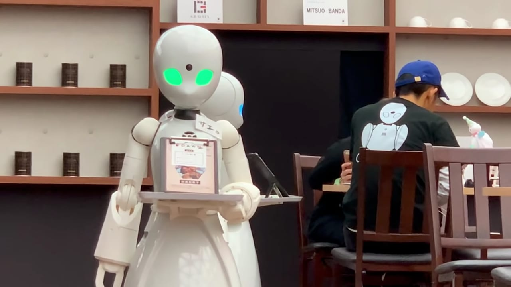
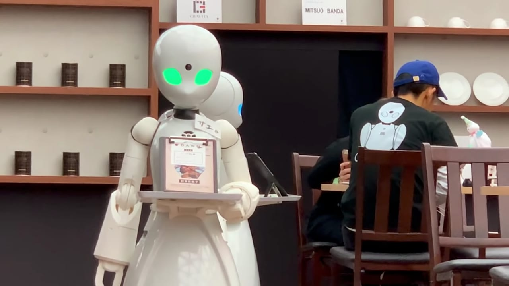

The Dawn Ver Café
In Tokyo, a Japanese start-up has trialed their robot café. Ory Lab developed robot waiters which can be controlled remotely by paralyzed people. The scheme employed ten disabled people with restricted movement.

Ory Lab aims to increase independence for disabled people. Special design features of the OriHime-D robots include a computer that tracks eye movements, making this job accesible to those with very limited mobility. The scheme intends to both create employment opportunities and make interacting with others easier for those who might otherwise be housebound. The café has now finished its trial, but is hoping to open permanently in 2020.
 
